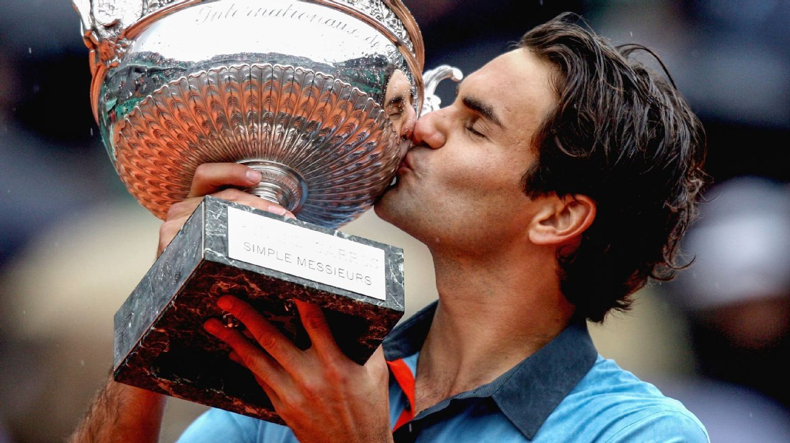
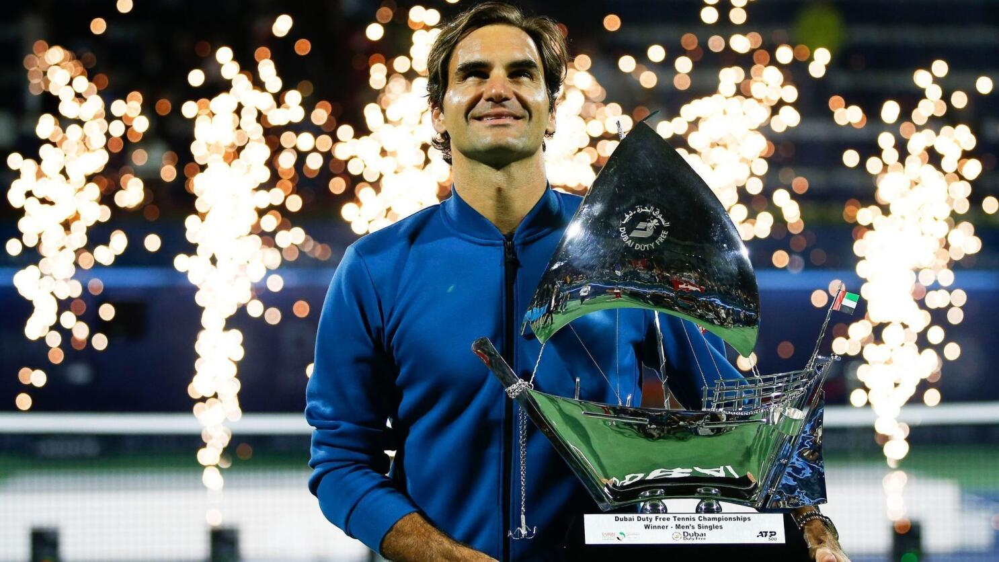
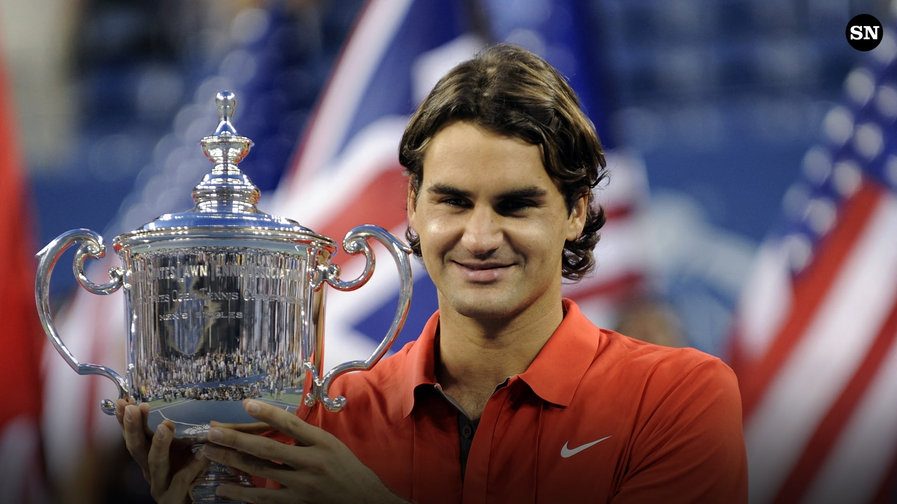
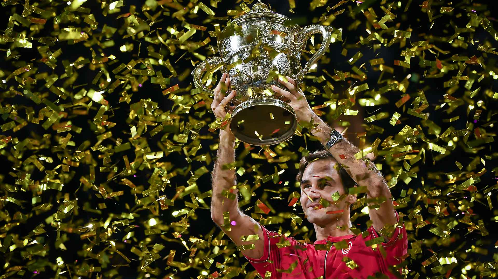
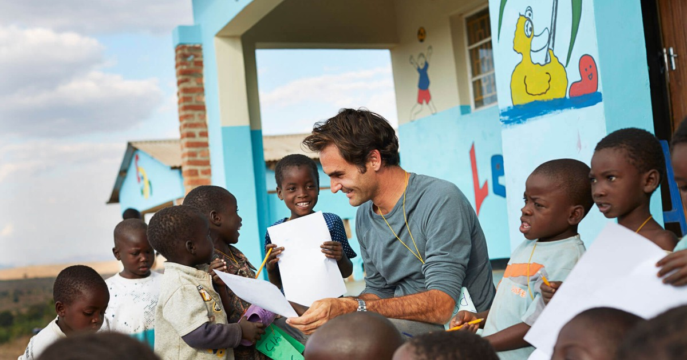
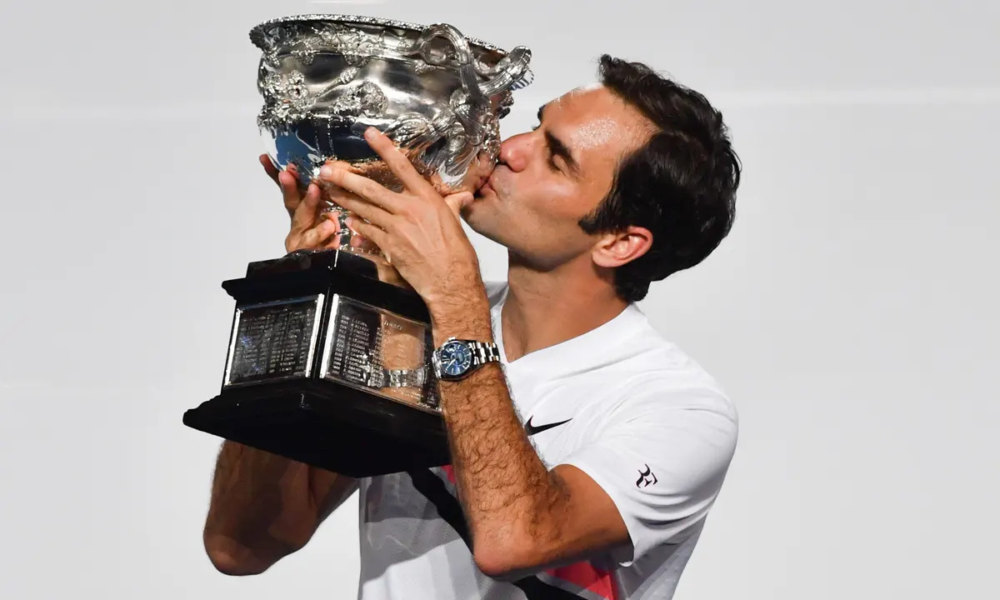

The elusive French Open victory in 2009

Record breaking 100th ATP title win in Dubai, 2019

First grand slam victory: Wimbledon 2003

Only player to win five consecutive US open titles, 2008 US Open

The comeback Australian Open victory in 2017

Final ATP title win in Basel, 2019

Perhaps his biggest win: his work with underprivileged children

Last grand slam victory, Australian Open 2018